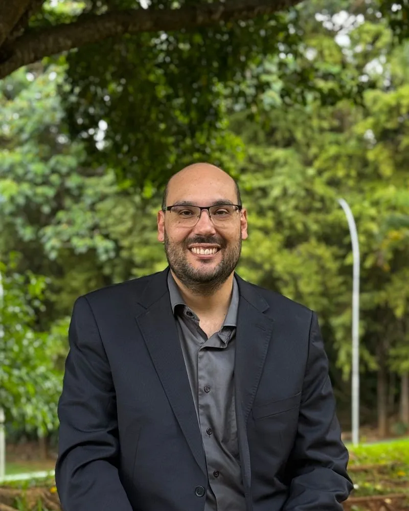
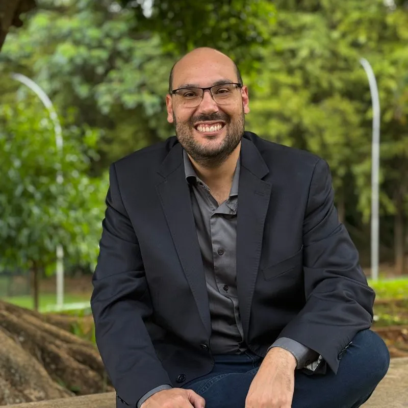

Visita em casa (Goiânia e região)
A mesma consulta, na casa da pessoa.
Dr. Victor Hugo Veiga Jardim · Médico com atuação em saúde do idoso · Goiânia
Eu vou até a casa da família, em Goiânia e região, para olhar a lista inteira de remédios e a pessoa. O idoso não é um adulto mais velho.
Médico com atuação em saúde do idoso. Atendimento particular, sem convênio.

A mesma consulta, na casa da pessoa.
Uma hora ou mais, com o olhar na pessoa inteira e um plano de acompanhamento ao final.
Acompanhamento contínuo de 2 a 3 meses, depois da consulta, com contato pelo WhatsApp.
A lista de remédios, a agenda de consultas, o sintoma novo que a gente fica se perguntando se pode ser efeito de algum remédio. E poucas pessoas com quem desabafar.
"A gente observa que nessa parte as pessoas se sentem muito sozinhas, sem ter alguém pra conversar, sem ter ninguém pra poder desabafar."
Dr. Victor Hugo
Você não precisa decidir tudo sozinha. Na consulta, a família também é ouvida.
E a lista só cresce. Pense em peças de dominó: uma derruba a outra. Na consulta, eu coloco a lista inteira na mesa e olho o conjunto, não cada remédio sozinho.
Não pare nenhum remédio por conta própria.
Eu vejo o paciente por completo, vejo as suas relações sociais e, a partir daí, traço uma hipótese diagnóstica.
A lista de remédios, de diagnósticos e de exames que foi virando o nome da pessoa. A consulta começa pela sacola de remédios na mesa e vai além dela.
A vida vem além da doença. Não se deixe definir por ser um paciente doente, mas se defina como você é.
Dr. Victor Hugo
Numa consulta de uma hora ou mais, às vezes a parte mais importante é quando eu não falo nada. Depois do silêncio, vem o acolhimento. E quem cuida também precisa ser ouvido.
Tá tudo bem não estar tudo bem.
O remédio certo, na hora certa, faz parte do cuidado.
Eu confiro a lista e ajusto aos poucos, observando o que muda. Não pare nenhum remédio por conta própria.
A consulta entrega clareza, um plano e alguém olhando o todo. O objetivo é um caminho, nunca uma garantia.

Sou médico com atuação em saúde do idoso, em Goiânia. Tenho pós-graduação em Geriatria, em Cuidados Paliativos e em Medicina de Família. A pós-graduação não é título de especialista.
Dr. Victor Hugo Veiga Jardim, Médico, CRM-GO 30046
O agendamento é direto e pessoal. O Dr. Victor ou a equipe respondem para entender a situação e indicar o melhor caminho.
Agendar pelo WhatsApp · (62) 99152-6137Não. O atendimento é particular, sem convênio.
Não. A consulta serve para quem quer entender melhor como cuidar de quem envelheceu, inclusive quando a pessoa está bem e a família quer acompanhar de perto.
Ajustar remédio é conversa para a consulta, olhando a lista inteira, aos poucos e observando o que muda. Não pare nenhum remédio por conta própria.
Quem organiza o cuidado, em geral uma filha ou neta, pode e deve vir junto.
Todos os remédios que a pessoa usa, inclusive os de farmácia e os naturais, e os exames e relatórios recentes.